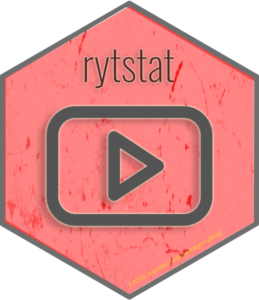

rytstat - R пакет для работы с YouTube API 
rytstat package is an R interface for working with the following YouTube APIs:
That is, the rytstat allows you to request any data available in the YouTube Creator Studio for further analysis and visualization using the R language.
Privacy Policy
The rytstat package for authorization uses the gargle package, the credentials obtained during authorization are stored exclusively on your local PC, you can find out the folder into which the credentials are cached using the ryt_auth_cache_path() function.
For loading data from your YouTube channel rytstat needs next scopes:
- View monetary and non-monetary YouTube Analytics reports for your YouTube content
- View your YouTube account
- View and manage your assets and associated content on YouTube
- View YouTube Analytics reports for your YouTube content
- Manage your YouTube account
For more details see Official YouTube API documentation.
The package does not transfer your credentials or data obtained from your advertising accounts to third parties, however, the responsibility for information leakage remains on the side of the package user. The author does not bear any responsibility for their safety, be careful when transferring cached credentials to third parties.
For more details, I recommend that you read the following articles from the official documentation of the gargle package:
Authorization process
You run gads_auth('me@gmail.com') and start OAuth Dance in the browser:

Upon success, you see this message in the browser:
Authentication complete. Please close this page and return to R.
And you credentials cached locally on your PC in the form of RDS files.
Key points
- By default, gargle caches user tokens centrally, at the user level, and their keys or labels also convey which Google identity is associated with each token.
- Token storage relies on serialized R objects. That is, tokens are stored locally on your PC in the form of RDS files.
Use own OAuth client
You can use own OAuth app:
app <- httr::oauth_app(appname = "app name", key = "app id", secret = "app secret")
ryt_auth_configure(app = app)
# or from json file
ryt_auth_configure(path = 'D:/ga_auth/app.json')
# run authorization
ryt_auth('me@gmail.com')Install
You can instal rytstat from CRAN or GitHub:
install.packages("rytstat")или GitHub:
devtools::install_github('selesnow/rytstat')Examples
Auth
library(rytstat)
library(httr)
# auth app
app <- oauth_app(
appname = 'my app',
key = 'app id',
secret = 'app secret')
ryt_auth_configure(app = app)
ryt_auth(email = 'me@gmail.com')
# load videos
videos <- ryt_get_video_list()Using YouTube Analytics API
library(rytstat)
# get list of videos
videos <- ryt_get_video_list()
# get statistics by day and videos
# you can specify no more than 500 videos at a time
video_stat <- ryt_get_analytics(
start_date = '2021-01-01',
end_date = '2021-09-01',
dimensions = c('day', 'video'),
metrics = c('views',
'likes',
'dislikes',
'comments',
'shares'),
filters = str_glue('video=={str_c(head(videos$id_video_id, 500), collapse=",")}')
)Using YouTube Reporting API
# auth
ryt_auth('me@gmail.com')
# get reporting data
## create job
ryt_reports_create_job('channel_basic_a2')
## get job list
jobs2 <- ryt_get_job_list()
## get job report list
reports <- ryt_get_report_list(
job_id = jobs$id[1],
created_after = '2021-10-20T15:01:23.045678Z'
)
# get report data
data <- ryt_get_report(
download_url = reports$downloadUrl[1]
)
# delete job
ryt_delete_job(jobs$id[1])